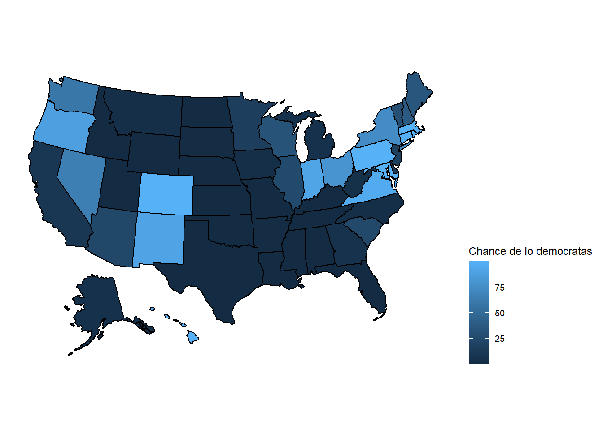

Chapter 5 Mapas
library(usmap)## Warning: package 'usmap' was built under R version 4.0.5library(ggplot2)
library(shapefiles)## Warning: package 'shapefiles' was built under R version 4.0.3## Loading required package: foreign##
## Attaching package: 'shapefiles'## The following objects are masked from 'package:foreign':
##
## read.dbf, write.dbflibrary(maptools)## Warning: package 'maptools' was built under R version 4.0.4## Loading required package: sp## Warning: package 'sp' was built under R version 4.0.4## Checking rgeos availability: FALSE
## Note: when rgeos is not available, polygon geometry computations in maptools depend on gpclib,
## which has a restricted licence. It is disabled by default;
## to enable gpclib, type gpclibPermit()dt_current<-dt %>% filter(maptype.y=="current")
dt_current<-dt %>% filter(maptype.y=="current")plot_usmap(data = dt_current, values = "efficiency_gap", color = "black") +
scale_fill_viridis_c()+ labs(title = "Brecha de eficacia en la eleccion",fill="Eficencia")
theme(legend.position = "right")## List of 1
## $ legend.position: chr "right"
## - attr(*, "class")= chr [1:2] "theme" "gg"
## - attr(*, "complete")= logi FALSE
## - attr(*, "validate")= logi TRUEplot_usmap(data = dt_current, values = "dem_chance", color = "black") +
scale_fill_continuous(name = "Chance de lo democratas", label = scales::comma) +
theme(legend.position = "right")
plot_usmap(data = dt_current, values = "PVI", color = "black") +
scale_fill_continuous(name = "Indice partisano", label = scales::comma) +
theme(legend.position = "right")
plot_usmap(data = dt_current, values = "compactness_rank", color = "black") +
scale_fill_discrete(name="Compacto")+
theme(legend.position = "right")